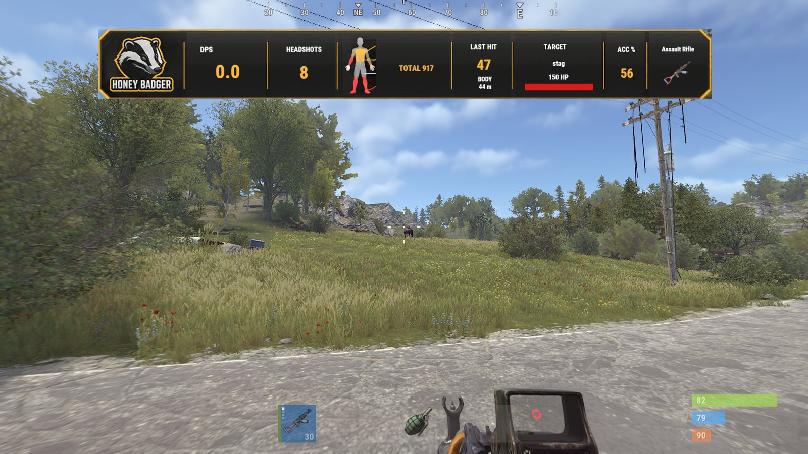
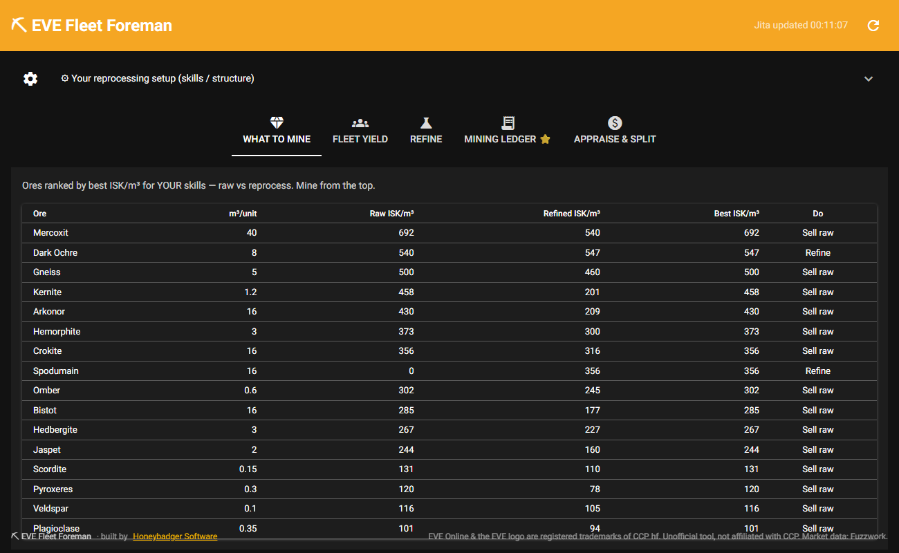
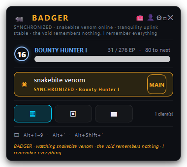

The stuff we build when the work's done.
Companions, overlays and mods for the games we actually play: a Rust server plugin you can install tonight, a WoW damage meter, an EVE Online command deck, a Diablo IV overlay, an arcade frontend and an original card game.
What exists, and where it stands
Released means a download on this site. Private build means it runs here and is not public yet.
Rust DPS MeterReleased — free — Oxide + Carbon

A live combat band for Rust servers: damage that actually landed, headshots, last hit with zone and range, your target's HP bar, accuracy and weapon. One file, no other plugins, MIT code. Running on our own server. Server plugin: draws through Rust's own UI system; nothing on the client is touched, no injection, no input automation.
Docs & downloadBattle AuraWoW Forever — released — free
A personal damage meter on a cinematic battle scene: floating hit numbers, crits, combos and records. Version 3.1.1, free. Client-side addon using only Blizzard's permitted API; no automation, no injection.
Download 3.1.1EVE Fleet ForemanEVE Online — shipped — free — open source

Ranks every ore by ISK/m³ off live Jita prices, computes fleet yield and time-to-fill, and splits mined loot fairly. Pro tier pulls your real 30-day Mining Ledger via EVE's own SSO login. Public on GitHub with a Windows installer. Reads public market data and, with your login, your own ESI ledger. Never touches the game client.
Details & downloadBADGEREVE Online command deck — private build

An overlay for multi-client EVE: a window switcher with live thumbnails, threat radar, pilot-intel cards, what-can-I-build and what-can-I-fly, a net-worth HUD and a local voice assistant you talk to. Window management and overlay only: it switches focus between clients and never sends keys into them. Voice is local mic and speaker.
Private buildSanctuary WatchDiablo IV — private build
A transparent overlay for Diablo IV: live World Boss, Helltide, Legion and Whisper timers, an editable build guide, loot and aspect checklists, paragon quick-reference and a session tracker, in a blood-drip WebGL look. Read-only: a separate always-on-top window rendering our own timers and checklists; it never touches the D4 process, memory or files.
Private buildCrimsonUIWorld of Warcraft — private build
A dark-gothic WoW addon suite: themed unit frames, Diablo-style floating damage numbers, a DPS meter, a multi-kill announcer, a mining map-pin overlay and a one-press macro sequencer. Client-side addon using only Blizzard's permitted API; the sequencer is the one-press model, you still press the key each cast.
Private buildRetro Arcade FrameworkWindows — not released
An arcade-cabinet frontend: a fullscreen tile-grid launcher over 15 systems via RetroArch cores, controller support, a ROM scanner and a real installer. Framework only: no copyrighted ROMs ship with it; the bundled content is an attributed legal homebrew pack. It wraps RetroArch, it does not reimplement games.
Not releasedBloodpackBrowser card game — playable beta, private
Rip open card packs, collect Champions from a post-collapse mutation world, and battle in a real-time top-down expedition with loot orbs. A standalone browser game with the full loop working end to end. Standalone game, no anti-cheat surface.
Private betaHoney Badger, Rust
Our own server runs the DPS Meter. Join it to see the band before you install the plugin on yours.
client.connect 216.39.241.155:27915
Built or in progress
Shown as they are. Each one goes on the lineup above the day it is public.
UGA Discord Botdeployed live
A community bot with 25 slash commands: image-card welcome, XP and rank, LFG, tournaments, a ten-game arcade and a one-command server builder. Live in the United Gaming Association server. Runs inside Discord's own bot API.
In one DiscordBloodpack 3Dplayable work in progress
The 3D evolution of Bloodpack: a post-apocalyptic looter-explorer on Unity with WASD movement, enterable interiors and a growing library of self-made props. Iterating on art. Standalone build.
Private buildLIMINALconcept stage
An indie dark ARPG: an ordinary person dies and fights through purgatory. Diablo loot, Souls atmosphere, a full story bible written. No vertical slice yet. Nothing to run yet.
ConceptDoes what it says, crosses no line
Every one of these follows the same rule as our industrial and 3D-printing work: it does exactly what it says, it never crosses a line it should not, and it ships finished or it does not ship.